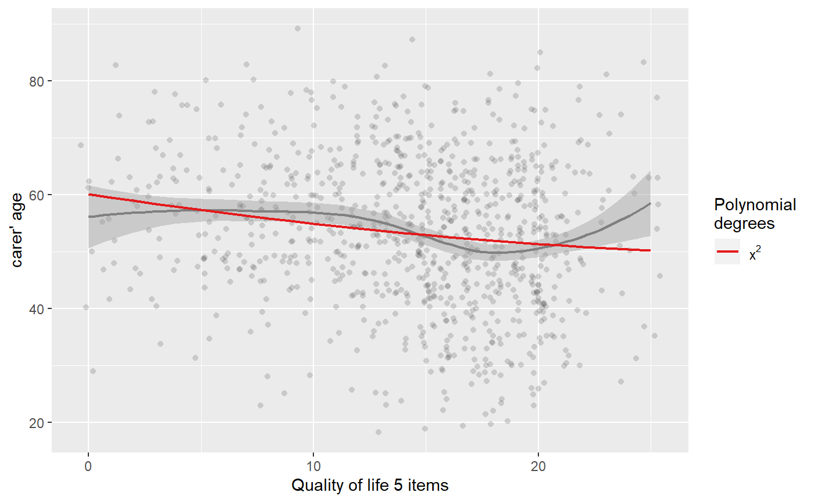
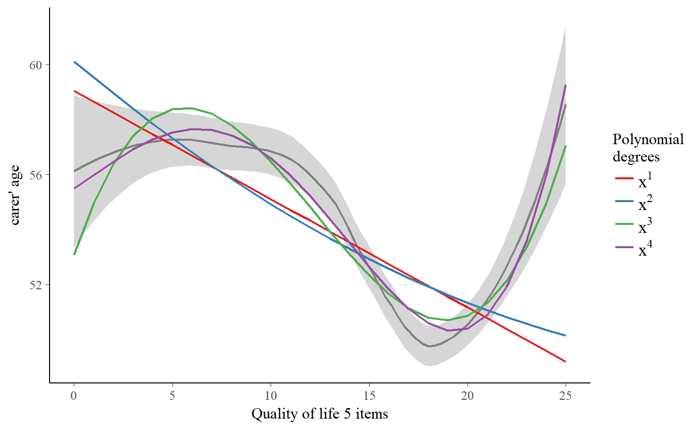
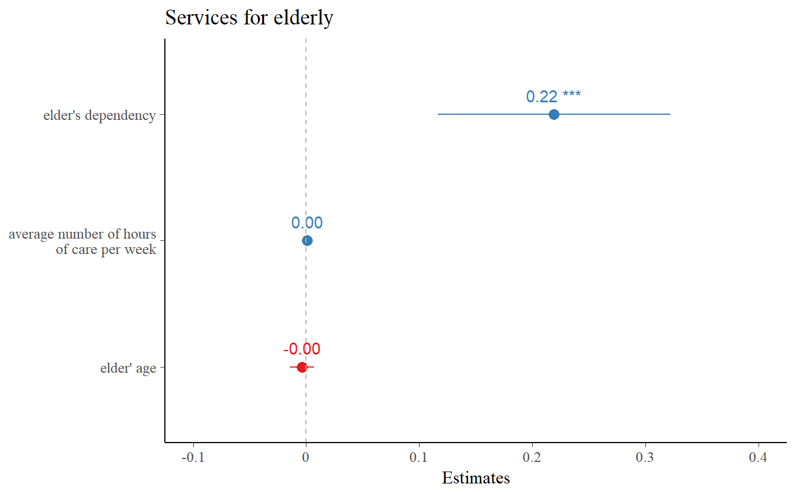
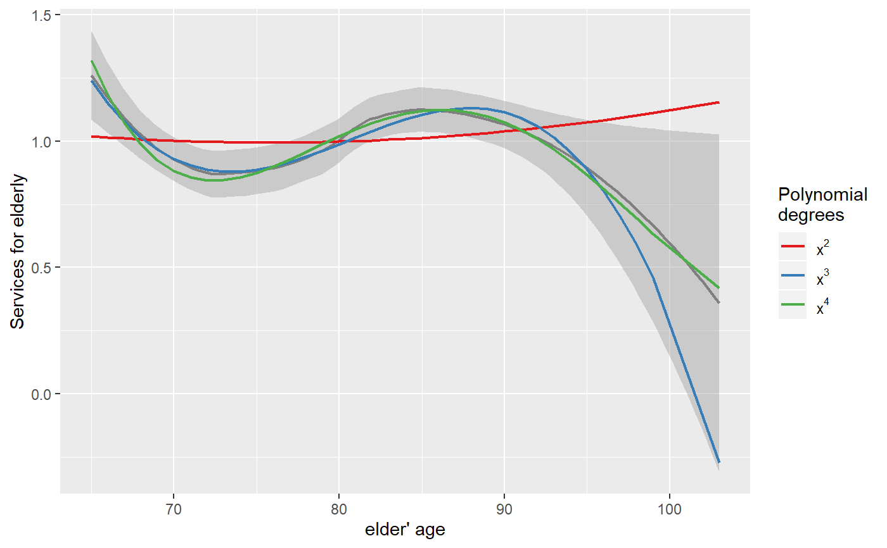

This function plots a scatter plot of a term poly.term
against a response variable x and adds - depending on
the amount of numeric values in poly.degree - multiple
polynomial curves. A loess-smoothed line can be added to see
which of the polynomial curves fits best to the data.
sjp.poly(x, poly.term, poly.degree, poly.scale = FALSE, fun = NULL, axis.title = NULL, geom.colors = NULL, geom.size = 0.8, show.loess = TRUE, show.loess.ci = TRUE, show.p = TRUE, show.scatter = TRUE, point.alpha = 0.2, point.color = "#404040", loess.color = "#808080", prnt.plot = TRUE)
Arguments
| x | A vector, representing the response variable of a linear (mixed) model; or
a linear (mixed) model as returned by |
|---|---|
| poly.term | If |
| poly.degree | Numeric, or numeric vector, indicating the degree of the polynomial.
If |
| poly.scale | Logical, if |
| fun | Linear function when modelling polynomial terms. Use |
| axis.title | Character vector of length one or two (depending on
the plot function and type), used as title(s) for the x and y axis.
If not specified, a default labelling is chosen. To set multiple
axis titles (e.g. with |
| geom.colors | User defined color palette for geoms. If |
| geom.size | size resp. width of the geoms (bar width, line thickness or point size, depending on plot type and function). Note that bar and bin widths mostly need smaller values than dot sizes. |
| show.loess | Logical, if |
| show.loess.ci | Logical, if |
| show.p | Logical, if |
| show.scatter | Logical, if |
| point.alpha | Alpha value of point-geoms in the scatter plots. Only applies,
if |
| point.color | Color of of point-geoms in the scatter plots. Only applies,
if |
| loess.color | Color of the loess-smoothed line. Only applies, if |
| prnt.plot | logical, if |
Value
(Insisibily) returns
plotthe ggplot-object with the complete plot
dfthe data frame that was used for setting up the ggplot-object
cutpointsa data frame that indicates x-values and predicted y-values of each direction change in the loess curvature
Details
For each polynomial degree, a simple linear regression on x (resp.
the extracted response, if x is a fitted model) is performed,
where only the polynomial term poly.term is included as independent variable.
Thus, lm(y ~ x + I(x^2) + ... + I(x^i)) is repeatedly computed
for all values in poly.degree, and the predicted values of
the reponse are plotted against the raw values of poly.term.
If x is a fitted model, other covariates are ignored when
finding the best fitting polynomial.
This function evaluates raw polynomials, not orthogonal polynomials.
Polynomials are computed using the poly function,
with argument raw = TRUE.
To find out which polynomial degree fits best to the data, a loess-smoothed
line (in dark grey) can be added (with show.loess = TRUE). The polynomial curves
that comes closest to the loess-smoothed line should be the best
fit to the data.
See also
To plot marginal effects of polynomial terms, call sjp.lm with type = "poly",
or sjp.lmer respectively for linear mixed models.
Examples
library(sjmisc) data(efc) # linear fit. loess-smoothed line indicates a more # or less cubic curve sjp.poly(efc$c160age, efc$quol_5, 1)#> Polynomial degrees: 1 #> --------------------- #> p(x^1): 0.000 #># quadratic fit sjp.poly(efc$c160age, efc$quol_5, 2)#> Polynomial degrees: 2 #> --------------------- #> p(x^1): 0.078 #> p(x^2): 0.533 #># linear to cubic fit sjp.poly(efc$c160age, efc$quol_5, 1:4, show.scatter = FALSE)#> Polynomial degrees: 1 #> --------------------- #> p(x^1): 0.000 #> #> Polynomial degrees: 2 #> --------------------- #> p(x^1): 0.078 #> p(x^2): 0.533 #> #> Polynomial degrees: 3 #> --------------------- #> p(x^1): 0.012 #> p(x^2): 0.001 #> p(x^3): 0.000 #> #> Polynomial degrees: 4 #> --------------------- #> p(x^1): 0.777 #> p(x^2): 0.913 #> p(x^3): 0.505 #> p(x^4): 0.254 #># fit sample model fit <- lm(tot_sc_e ~ c12hour + e17age + e42dep, data = efc) # inspect relationship between predictors and response plot_model(fit, type = "slope")#> Warning: pseudoinverse used at 4.015#> Warning: neighborhood radius 2.015#> Warning: reciprocal condition number 2.8666e-015#> Warning: There are other near singularities as well. 1# "e17age" does not seem to be linear correlated to response # try to find appropiate polynomial. Grey line (loess smoothed) # indicates best fit. Looks like x^4 has the best fit, # however, only x^3 has significant p-values. sjp.poly(fit, "e17age", 2:4, show.scatter = FALSE)#> Polynomial degrees: 2 #> --------------------- #> p(x^1): 0.734 #> p(x^2): 0.721 #> #> Polynomial degrees: 3 #> --------------------- #> p(x^1): 0.010 #> p(x^2): 0.011 #> p(x^3): 0.011 #> #> Polynomial degrees: 4 #> --------------------- #> p(x^1): 0.234 #> p(x^2): 0.267 #> p(x^3): 0.303 #> p(x^4): 0.343 #># NOT RUN { # fit new model fit <- lm(tot_sc_e ~ c12hour + e42dep + e17age + I(e17age^2) + I(e17age^3), data = efc) # plot marginal effects of polynomial term plot_model(fit, type = "pred", terms = "e17age") # }